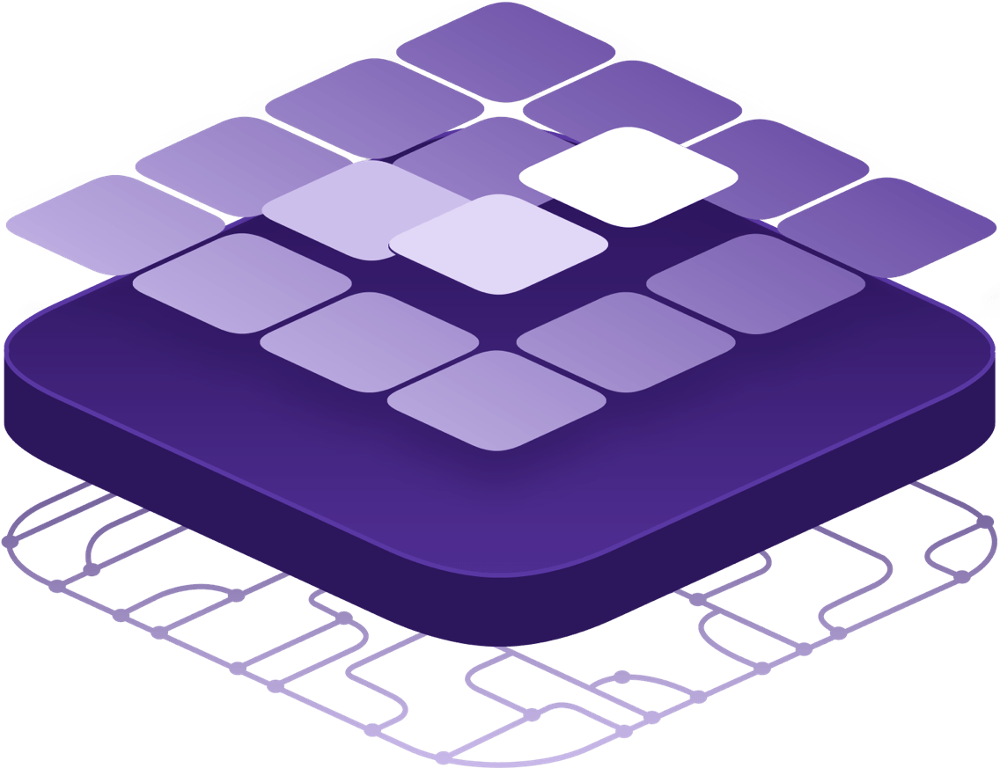

<!DOCTYPE HTML>
<html lang="" >
    <head>
        <title>DC/OS概览 · GitBook</title>
        <meta charset="UTF-8">
        <meta http-equiv="X-UA-Compatible" content="IE=edge" />
        <meta content="text/html; charset=utf-8" http-equiv="Content-Type">
        <meta name="description" content="">
        <meta name="generator" content="GitBook 3.2.0">
        
        
        
    
    <link rel="stylesheet" href="gitbook/style.css">

    
            
                
                <link rel="stylesheet" href="gitbook/gitbook-plugin-highlight/website.css">
                
            
                
                <link rel="stylesheet" href="gitbook/gitbook-plugin-search/search.css">
                
            
                
                <link rel="stylesheet" href="gitbook/gitbook-plugin-fontsettings/website.css">
                
            
        

    

    
        
    
        
    
        
    
        
    
        
    
        
    

        
    
    
    <meta name="HandheldFriendly" content="true"/>
    <meta name="viewport" content="width=device-width, initial-scale=1, user-scalable=no">
    <meta name="apple-mobile-web-app-capable" content="yes">
    <meta name="apple-mobile-web-app-status-bar-style" content="black">
    <link rel="apple-touch-icon-precomposed" sizes="152x152" href="gitbook/images/apple-touch-icon-precomposed-152.png">
    <link rel="shortcut icon" href="gitbook/images/favicon.ico" type="image/x-icon">

    
    <link rel="next" href="dcos-basic-theory.html" />
    
    
    <link rel="prev" href="./" />
    

    </head>
    <body>
        
<div class="book">
    <div class="book-summary">
        
            
<div id="book-search-input" role="search">
    <input type="text" placeholder="Type to search" />
</div>

            
                <nav role="navigation">
                


<ul class="summary">
    
    

    

    
        
        <li class="header">DC/OS之导论</li>
        
        
    
        <li class="chapter " data-level="1.1" data-path="./">
            
                <a href="./">
            
                    
                    导论
            
                </a>
            

            
            <ul class="articles">
                
    
        <li class="chapter active" data-level="1.1.1" data-path="dcos概览.html">
            
                <a href="dcos概览.html">
            
                    
                    DC/OS概览
            
                </a>
            

            
        </li>
    
        <li class="chapter " data-level="1.1.2" data-path="dcos-basic-theory.html">
            
                <a href="dcos-basic-theory.html">
            
                    
                    系统基础
            
                </a>
            

            
            <ul class="articles">
                
    
        <li class="chapter " data-level="1.1.2.1" data-path="dcos-basic-theory-terminologies.html">
            
                <a href="dcos-basic-theory-terminologies.html">
            
                    
                    名词术语
            
                </a>
            

            
        </li>
    

            </ul>
            
        </li>
    
        <li class="chapter " data-level="1.1.3" data-path="dcos-theory-schedule-strategy.html">
            
                <a href="dcos-theory-schedule-strategy.html">
            
                    
                    资源调度策略
            
                </a>
            

            
        </li>
    

            </ul>
            
        </li>
    
        <li class="chapter " data-level="1.2" data-path="环境搭建.html">
            
                <a href="环境搭建.html">
            
                    
                    环境搭建
            
                </a>
            

            
            <ul class="articles">
                
    
        <li class="chapter " data-level="1.2.1" data-path="dcos-install-default.html">
            
                <a href="dcos-install-default.html">
            
                    
                    安装环境准备
            
                </a>
            

            
            <ul class="articles">
                
    
        <li class="chapter " data-level="1.2.1.1" data-path="dcos-install-docker-on-centos.html">
            
                <a href="dcos-install-docker-on-centos.html">
            
                    
                    在Centos上安装Docker
            
                </a>
            

            
        </li>
    

            </ul>
            
        </li>
    
        <li class="chapter " data-level="1.2.2" data-path="dcos-install-by-gui.html">
            
                <a href="dcos-install-by-gui.html">
            
                    
                    GUI安装
            
                </a>
            

            
        </li>
    
        <li class="chapter " data-level="1.2.3" data-path="dcos-install-by-cli.html">
            
                <a href="dcos-install-by-cli.html">
            
                    
                    通过CLI安装
            
                </a>
            

            
        </li>
    
        <li class="chapter " data-level="1.2.4" data-path="dcos-install-by-advanced-mode.html">
            
                <a href="dcos-install-by-advanced-mode.html">
            
                    
                    高级安装
            
                </a>
            

            
        </li>
    

            </ul>
            
        </li>
    
        <li class="chapter " data-level="1.3" data-path="dcos-install-maintainance.html">
            
                <a href="dcos-install-maintainance.html">
            
                    
                    集群维护
            
                </a>
            

            
            <ul class="articles">
                
    
        <li class="chapter " data-level="1.3.1" data-path="dcos-install-backup-installer-file.html">
            
                <a href="dcos-install-backup-installer-file.html">
            
                    
                    备份集群安装文件
            
                </a>
            

            
        </li>
    
        <li class="chapter " data-level="1.3.2" data-path="dcos-install-nodes-management.html">
            
                <a href="dcos-install-nodes-management.html">
            
                    
                    集群节点管理
            
                </a>
            

            
        </li>
    
        <li class="chapter " data-level="1.3.3" data-path="dcos-install-m-uninstall-all.html">
            
                <a href="dcos-install-m-uninstall-all.html">
            
                    
                    集群卸载
            
                </a>
            

            
        </li>
    

            </ul>
            
        </li>
    
        <li class="chapter " data-level="1.4" data-path="dcos-install-faq.html">
            
                <a href="dcos-install-faq.html">
            
                    
                    FAQ
            
                </a>
            

            
        </li>
    

    
        
        <li class="header">DC/OS之原理</li>
        
        
    
        <li class="chapter " data-level="2.1" data-path="dcos-theory-overview.html">
            
                <a href="dcos-theory-overview.html">
            
                    
                    理解DC/OS
            
                </a>
            

            
            <ul class="articles">
                
    
        <li class="chapter " data-level="2.1.1" data-path="dcos-dcos-admin-ports.html">
            
                <a href="dcos-dcos-admin-ports.html">
            
                    
                    DC/OS内部端口
            
                </a>
            

            
        </li>
    

            </ul>
            
        </li>
    
        <li class="chapter " data-level="2.2" data-path="dcos-mesos.html">
            
                <a href="dcos-mesos.html">
            
                    
                    Mesos
            
                </a>
            

            
            <ul class="articles">
                
    
        <li class="chapter " data-level="2.2.1" data-path="dcos-mesos-attributes-and-resources.html">
            
                <a href="dcos-mesos-attributes-and-resources.html">
            
                    
                    资源与属性
            
                </a>
            

            
        </li>
    
        <li class="chapter " data-level="2.2.2" data-path="dcos-mesos-roles.html">
            
                <a href="dcos-mesos-roles.html">
            
                    
                    角色（Roles）
            
                </a>
            

            
        </li>
    
        <li class="chapter " data-level="2.2.3" data-path="dcos-mesos-reservation.html">
            
                <a href="dcos-mesos-reservation.html">
            
                    
                    资源预留（Reservation）
            
                </a>
            

            
        </li>
    
        <li class="chapter " data-level="2.2.4" data-path="dcos-mesos-weights.html">
            
                <a href="dcos-mesos-weights.html">
            
                    
                    权重（Weights）
            
                </a>
            

            
        </li>
    
        <li class="chapter " data-level="2.2.5" data-path="dcos-mesos-quota.html">
            
                <a href="dcos-mesos-quota.html">
            
                    
                    配额（Quota）
            
                </a>
            

            
        </li>
    
        <li class="chapter " data-level="2.2.6" data-path="dcos-mesos-agent-recovery.html">
            
                <a href="dcos-mesos-agent-recovery.html">
            
                    
                    Agent节点恢复
            
                </a>
            

            
        </li>
    
        <li class="chapter " data-level="2.2.7" data-path="dcos-mesos-authorization.html">
            
                <a href="dcos-mesos-authorization.html">
            
                    
                    Authorization
            
                </a>
            

            
        </li>
    

            </ul>
            
        </li>
    
        <li class="chapter " data-level="2.3" data-path="dcos-marathon.html">
            
                <a href="dcos-marathon.html">
            
                    
                    Marathon
            
                </a>
            

            
            <ul class="articles">
                
    
        <li class="chapter " data-level="2.3.1" data-path="dcos-marathon-health-checks.html">
            
                <a href="dcos-marathon-health-checks.html">
            
                    
                    应用健康检查
            
                </a>
            

            
        </li>
    
        <li class="chapter " data-level="2.3.2" data-path="dcos-marathon-container.html">
            
                <a href="dcos-marathon-container.html">
            
                    
                    容器运行管理
            
                </a>
            

            
        </li>
    
        <li class="chapter " data-level="2.3.3" data-path="dcos-marathon-app-deployments.html">
            
                <a href="dcos-marathon-app-deployments.html">
            
                    
                    应用服务部署
            
                </a>
            

            
        </li>
    
        <li class="chapter " data-level="2.3.4" data-path="dcos-marathon-event-bus.html">
            
                <a href="dcos-marathon-event-bus.html">
            
                    
                    事件总线
            
                </a>
            

            
        </li>
    

            </ul>
            
        </li>
    
        <li class="chapter " data-level="2.4" data-path="dcos-system-components.html">
            
                <a href="dcos-system-components.html">
            
                    
                    系统服务
            
                </a>
            

            
            <ul class="articles">
                
    
        <li class="chapter " data-level="2.4.1" data-path="dcos-component-exhibitor.html">
            
                <a href="dcos-component-exhibitor.html">
            
                    
                    Exhibitor
            
                </a>
            

            
        </li>
    
        <li class="chapter " data-level="2.4.2" data-path="dcos-component-3dt.html">
            
                <a href="dcos-component-3dt.html">
            
                    
                    3DT
            
                </a>
            

            
        </li>
    
        <li class="chapter " data-level="2.4.3" data-path="dcos-component-adminrouter.html">
            
                <a href="dcos-component-adminrouter.html">
            
                    
                    Adminrouter
            
                </a>
            

            
        </li>
    
        <li class="chapter " data-level="2.4.4" data-path="dcos-component-cosmos.html">
            
                <a href="dcos-component-cosmos.html">
            
                    
                    Cosmos
            
                </a>
            

            
        </li>
    
        <li class="chapter " data-level="2.4.5" data-path="dcos-component-minuteman.html">
            
                <a href="dcos-component-minuteman.html">
            
                    
                    Minuteman
            
                </a>
            

            
        </li>
    
        <li class="chapter " data-level="2.4.6" data-path="dcos-component-spartan.html">
            
                <a href="dcos-component-spartan.html">
            
                    
                    Spartan
            
                </a>
            

            
        </li>
    

            </ul>
            
        </li>
    
        <li class="chapter " data-level="2.5" data-path="dcos-mesos-containerizer.html">
            
                <a href="dcos-mesos-containerizer.html">
            
                    
                    容器化
            
                </a>
            

            
            <ul class="articles">
                
    
        <li class="chapter " data-level="2.5.1" data-path="dcos-mesos-containerizer-internals.html">
            
                <a href="dcos-mesos-containerizer-internals.html">
            
                    
                    容器化实现细节
            
                </a>
            

            
        </li>
    
        <li class="chapter " data-level="2.5.2" data-path="dcos-mesos-mesos-containerizer.html">
            
                <a href="dcos-mesos-mesos-containerizer.html">
            
                    
                    Mesos容器化
            
                </a>
            

            
            <ul class="articles">
                
    
        <li class="chapter " data-level="2.5.2.1" data-path="dcos-mesos-mesos-containerizer-docker-volume.html">
            
                <a href="dcos-mesos-mesos-containerizer-docker-volume.html">
            
                    
                    Docker卷支持
            
                </a>
            

            
        </li>
    
        <li class="chapter " data-level="2.5.2.2" data-path="dcos-mesos-containerizer-cni.html">
            
                <a href="dcos-mesos-containerizer-cni.html">
            
                    
                    容器网络接口
            
                </a>
            

            
        </li>
    

            </ul>
            
        </li>
    
        <li class="chapter " data-level="2.5.3" data-path="dcos-mesos-docker-containerizer.html">
            
                <a href="dcos-mesos-docker-containerizer.html">
            
                    
                    Docker容器化
            
                </a>
            

            
        </li>
    
        <li class="chapter " data-level="2.5.4" data-path="dcos-marathon-container.html">
            
                <a href="dcos-marathon-container.html">
            
                    
                    容器运行管理
            
                </a>
            

            
        </li>
    

            </ul>
            
        </li>
    
        <li class="chapter " data-level="2.6" data-path="dcos-network.html">
            
                <a href="dcos-network.html">
            
                    
                    容器网络方案
            
                </a>
            

            
            <ul class="articles">
                
    
        <li class="chapter " data-level="2.6.1" data-path="dcos-network-marathon-ports.html">
            
                <a href="dcos-network-marathon-ports.html">
            
                    
                    服务端口配置
            
                </a>
            

            
        </li>
    

            </ul>
            
        </li>
    
        <li class="chapter " data-level="2.7" data-path="dcos-service-discovery.html">
            
                <a href="dcos-service-discovery.html">
            
                    
                    服务发现与负载
            
                </a>
            

            
            <ul class="articles">
                
    
        <li class="chapter " data-level="2.7.1" data-path="dcos-network-vips.html">
            
                <a href="dcos-network-vips.html">
            
                    
                    VIPs
            
                </a>
            

            
            <ul class="articles">
                
    
        <li class="chapter " data-level="2.7.1.1" data-path="dcos-network-vips-lb.html">
            
                <a href="dcos-network-vips-lb.html">
            
                    
                    基于VIPs的负载调度
            
                </a>
            

            
        </li>
    

            </ul>
            
        </li>
    
        <li class="chapter " data-level="2.7.2" data-path="dcos-component-marathon-lb.html">
            
                <a href="dcos-component-marathon-lb.html">
            
                    
                    Marathon-LB
            
                </a>
            

            
            <ul class="articles">
                
    
        <li class="chapter " data-level="2.7.2.1" data-path="dcos-component-marathon-lb-basic.html">
            
                <a href="dcos-component-marathon-lb-basic.html">
            
                    
                    基本概念
            
                </a>
            

            
        </li>
    
        <li class="chapter " data-level="2.7.2.2" data-path="dcos-component-marathon-lb-advanced.html">
            
                <a href="dcos-component-marathon-lb-advanced.html">
            
                    
                    高级特性
            
                </a>
            

            
        </li>
    
        <li class="chapter " data-level="2.7.2.3" data-path="dcos-component-marathon-lb-template.html">
            
                <a href="dcos-component-marathon-lb-template.html">
            
                    
                    配置参考
            
                </a>
            

            
        </li>
    
        <li class="chapter " data-level="2.7.2.4" data-path="dcos-component-marathon-lb-tutorials.html">
            
                <a href="dcos-component-marathon-lb-tutorials.html">
            
                    
                    应用示例
            
                </a>
            

            
        </li>
    

            </ul>
            
        </li>
    
        <li class="chapter " data-level="2.7.3" data-path="dcos-component-mesos-dns.html">
            
                <a href="dcos-component-mesos-dns.html">
            
                    
                    Mesos-DNS
            
                </a>
            

            
            <ul class="articles">
                
    
        <li class="chapter " data-level="2.7.3.1" data-path="dcos-component-mesos-dns-service-naming.html">
            
                <a href="dcos-component-mesos-dns-service-naming.html">
            
                    
                    服务命名
            
                </a>
            

            
        </li>
    
        <li class="chapter " data-level="2.7.3.2" data-path="dcos-component-mesos-dns-http-api.html">
            
                <a href="dcos-component-mesos-dns-http-api.html">
            
                    
                    HTTP接口
            
                </a>
            

            
        </li>
    

            </ul>
            
        </li>
    

            </ul>
            
        </li>
    
        <li class="chapter " data-level="2.8" data-path="dcos-storage.html">
            
                <a href="dcos-storage.html">
            
                    
                    存储策略与方案
            
                </a>
            

            
            <ul class="articles">
                
    
        <li class="chapter " data-level="2.8.1" data-path="dcos-storage-multi-disks.html">
            
                <a href="dcos-storage-multi-disks.html">
            
                    
                    磁盘资源
            
                </a>
            

            
            <ul class="articles">
                
    
        <li class="chapter " data-level="2.8.1.1" data-path="dcos-storage-mount-disk-resources.html">
            
                <a href="dcos-storage-mount-disk-resources.html">
            
                    
                    增加磁盘资源
            
                </a>
            

            
        </li>
    
        <li class="chapter " data-level="2.8.1.2" data-path="dcos-storage-nfs-server.html">
            
                <a href="dcos-storage-nfs-server.html">
            
                    
                    增加NFS存储
            
                </a>
            

            
        </li>
    

            </ul>
            
        </li>
    
        <li class="chapter " data-level="2.8.2" data-path="dcos-storage-persistent-volume.html">
            
                <a href="dcos-storage-persistent-volume.html">
            
                    
                    持久化卷
            
                </a>
            

            
            <ul class="articles">
                
    
        <li class="chapter " data-level="2.8.2.1" data-path="dcos-storage-persistent-volume-local.html">
            
                <a href="dcos-storage-persistent-volume-local.html">
            
                    
                    本地持久化卷
            
                </a>
            

            
        </li>
    
        <li class="chapter " data-level="2.8.2.2" data-path="外部持久化卷.html">
            
                <a href="外部持久化卷.html">
            
                    
                    外部持久化卷
            
                </a>
            

            
        </li>
    

            </ul>
            
        </li>
    
        <li class="chapter " data-level="2.8.3" data-path="dcos-storage-sansds.html">
            
                <a href="dcos-storage-sansds.html">
            
                    
                    SAN/SDS
            
                </a>
            

            
            <ul class="articles">
                
    
        <li class="chapter " data-level="2.8.3.1" data-path="dcos-storage-sansds-rexray.html">
            
                <a href="dcos-storage-sansds-rexray.html">
            
                    
                    Rex-Ray
            
                </a>
            

            
        </li>
    
        <li class="chapter " data-level="2.8.3.2" data-path="dcos-storage-sansds-flocker.html">
            
                <a href="dcos-storage-sansds-flocker.html">
            
                    
                    Flocker
            
                </a>
            

            
        </li>
    
        <li class="chapter " data-level="2.8.3.3" data-path="dcos-storage-sansds-convoy.html">
            
                <a href="dcos-storage-sansds-convoy.html">
            
                    
                    Convoy
            
                </a>
            

            
        </li>
    

            </ul>
            
        </li>
    

            </ul>
            
        </li>
    
        <li class="chapter " data-level="2.9" data-path="dcos-component-universe.html">
            
                <a href="dcos-component-universe.html">
            
                    
                    Universe
            
                </a>
            

            
            <ul class="articles">
                
    
        <li class="chapter " data-level="2.9.1" data-path="dcos-component-universe-usage.html">
            
                <a href="dcos-component-universe-usage.html">
            
                    
                    应用的管理
            
                </a>
            

            
        </li>
    

            </ul>
            
        </li>
    

    
        
        <li class="header">DC/OS之服务</li>
        
        
    
        <li class="chapter " data-level="3.1" data-path="dcos-service-stateful.html">
            
                <a href="dcos-service-stateful.html">
            
                    
                    有状态应用服务
            
                </a>
            

            
        </li>
    
        <li class="chapter " data-level="3.2" data-path="jenkins-on-dcos.html">
            
                <a href="jenkins-on-dcos.html">
            
                    
                    Jenkins on DCOS
            
                </a>
            

            
            <ul class="articles">
                
    
        <li class="chapter " data-level="3.2.1" data-path="dcos-service-jenkins-custom-dind.html">
            
                <a href="dcos-service-jenkins-custom-dind.html">
            
                    
                    自定义Jenkins Slave容器镜像
            
                </a>
            

            
        </li>
    
        <li class="chapter " data-level="3.2.2" data-path="deploy.html">
            
                <a href="deploy.html">
            
                    
                    示例：在Jenkins on DCOS上编译部署Tomcat应用
            
                </a>
            

            
        </li>
    

            </ul>
            
        </li>
    
        <li class="chapter " data-level="3.3" data-path="dcos-service-hdfs.html">
            
                <a href="dcos-service-hdfs.html">
            
                    
                    HDFS on DCOS
            
                </a>
            

            
        </li>
    
        <li class="chapter " data-level="3.4" data-path="dcos-service-cassandra.html">
            
                <a href="dcos-service-cassandra.html">
            
                    
                    Cassandra on DCOS
            
                </a>
            

            
        </li>
    
        <li class="chapter " data-level="3.5" data-path="dcos-service-management.html">
            
                <a href="dcos-service-management.html">
            
                    
                    服务的管理
            
                </a>
            

            
        </li>
    

    
        
        <li class="header">DCOS之管理</li>
        
        
    
        <li class="chapter " data-level="4.1" data-path="dcos-admin-cli.html">
            
                <a href="dcos-admin-cli.html">
            
                    
                    DCOS CLI
            
                </a>
            

            
        </li>
    
        <li class="chapter " data-level="4.2" data-path="dcos-admin-ui.html">
            
                <a href="dcos-admin-ui.html">
            
                    
                    DCOS 管理UI
            
                </a>
            

            
        </li>
    
        <li class="chapter " data-level="4.3" data-path="dcos-admin-storage.html">
            
                <a href="dcos-admin-storage.html">
            
                    
                    存储管理
            
                </a>
            

            
            <ul class="articles">
                
    
        <li class="chapter " data-level="4.3.1" data-path="dcos-admin-storage-glusterfs.html">
            
                <a href="dcos-admin-storage-glusterfs.html">
            
                    
                    GlusterFS存储
            
                </a>
            

            
            <ul class="articles">
                
    
        <li class="chapter " data-level="4.3.1.1" data-path="dcos-admin-storage-glusterfs-overview.html">
            
                <a href="dcos-admin-storage-glusterfs-overview.html">
            
                    
                    GlusterFS概览
            
                </a>
            

            
        </li>
    
        <li class="chapter " data-level="4.3.1.2" data-path="dcos-admin-storage-glusterfs-admin.html">
            
                <a href="dcos-admin-storage-glusterfs-admin.html">
            
                    
                    GlusterFS维护
            
                </a>
            

            
        </li>
    
        <li class="chapter " data-level="4.3.1.3" data-path="dcos-admin-storage-glusterfs-architecture.html">
            
                <a href="dcos-admin-storage-glusterfs-architecture.html">
            
                    
                    GlusterFS架构
            
                </a>
            

            
        </li>
    

            </ul>
            
        </li>
    
        <li class="chapter " data-level="4.3.2" data-path="dcos-admin-storage-ceph.html">
            
                <a href="dcos-admin-storage-ceph.html">
            
                    
                    Ceph集群存储
            
                </a>
            

            
        </li>
    

            </ul>
            
        </li>
    
        <li class="chapter " data-level="4.4" data-path="dcos-admin-logging.html">
            
                <a href="dcos-admin-logging.html">
            
                    
                    日志管理
            
                </a>
            

            
        </li>
    

    
        
        <li class="header">DC/OS之应用</li>
        
        
    
        <li class="chapter " data-level="5.1" data-path="dcos-usage-dockers.html">
            
                <a href="dcos-usage-dockers.html">
            
                    
                    容器与镜像
            
                </a>
            

            
            <ul class="articles">
                
    
        <li class="chapter " data-level="5.1.1" data-path="dcos-usage-docker-dockerfile.html">
            
                <a href="dcos-usage-docker-dockerfile.html">
            
                    
                    Dockerfile
            
                </a>
            

            
        </li>
    
        <li class="chapter " data-level="5.1.2" data-path="dcos-usage-docker-multi-app-in-one.html">
            
                <a href="dcos-usage-docker-multi-app-in-one.html">
            
                    
                    同一容器中部署多个APP
            
                </a>
            

            
        </li>
    
        <li class="chapter " data-level="5.1.3" data-path="dcos-usage-docker-storage-driver.html">
            
                <a href="dcos-usage-docker-storage-driver.html">
            
                    
                    存储驱动
            
                </a>
            

            
        </li>
    

            </ul>
            
        </li>
    
        <li class="chapter " data-level="5.2" data-path="dcos-service-pre-private-docker-registry.html">
            
                <a href="dcos-service-pre-private-docker-registry.html">
            
                    
                    私有容器仓库
            
                </a>
            

            
        </li>
    
        <li class="chapter " data-level="5.3" data-path="dcos-usage-cicd.html">
            
                <a href="dcos-usage-cicd.html">
            
                    
                    持续集成与持续部署
            
                </a>
            

            
            <ul class="articles">
                
    
        <li class="chapter " data-level="5.3.1" data-path="dcos-usage-cicd-build-by-maven.html">
            
                <a href="dcos-usage-cicd-build-by-maven.html">
            
                    
                    应用打包与镜像构建
            
                </a>
            

            
        </li>
    
        <li class="chapter " data-level="5.3.2" data-path="dcos-usage-cicd-integration.html">
            
                <a href="dcos-usage-cicd-integration.html">
            
                    
                    持续集成与构建
            
                </a>
            

            
        </li>
    
        <li class="chapter " data-level="5.3.3" data-path="dcos-usage-cicd-deploy.html">
            
                <a href="dcos-usage-cicd-deploy.html">
            
                    
                    持续部署
            
                </a>
            

            
        </li>
    

            </ul>
            
        </li>
    

    
        
        <li class="header">DCOS之开发</li>
        
        
    
        <li class="chapter " data-level="6.1" data-path="dcos-theory-solutions-martrix.html">
            
                <a href="dcos-theory-solutions-martrix.html">
            
                    
                    Docker Swarm vs Mesos vs Kubernetties
            
                </a>
            

            
        </li>
    

    

    <li class="divider"></li>

    <li>
        <a href="https://www.gitbook.com" target="blank" class="gitbook-link">
            Published with GitBook
        </a>
    </li>
</ul>


                </nav>
            
        
    </div>

    <div class="book-body">
        
            <div class="body-inner">
                
                    

<div class="book-header" role="navigation">
    

    <!-- Title -->
    <h1>
        <i class="fa fa-circle-o-notch fa-spin"></i>
        <a href="." >DC/OS概览</a>
    </h1>
</div>


                    <div class="page-wrapper" tabindex="-1" role="main">
                        <div class="page-inner">
                            
<div id="book-search-results">
    <div class="search-noresults">
    
                                <section class="normal markdown-section">
                                
                                <h2 id="dcos&#x6982;&#x89C8;">DC/OS&#x6982;&#x89C8;</h2><p>DC/OS&#x5373;&#x6570;&#x636E;&#x4E2D;&#x5FC3;&#x64CD;&#x4F5C;&#x7CFB;&#x7EDF;&#xFF0C;&#x662F;&#x4E00;&#x4E2A;&#x67B6;&#x6784;&#x4E8E;&#x73B0;&#x6709;&#x5355;&#x673A;&#x64CD;&#x4F5C;&#x7CFB;&#x7EDF;&#x4E4B;&#x4E0A;&#x7684;&#x7EDF;&#x4E00;&#x8C03;&#x5EA6;&#x7BA1;&#x7406;&#x4E00;&#x4E2A;&#x89C4;&#x6A21;&#x786C;&#x4EF6;&#x96C6;&#x7FA4;&#x7684;CPU&#x3001;&#x5185;&#x5B58;&#x3001;&#x78C1;&#x76D8;&#x548C;&#x7F51;&#x7EDC;&#x7B49;&#x8D44;&#x6E90;&#x4E3A;&#x4E0A;&#x5C42;&#x5E94;&#x7528;&#x63D0;&#x4F9B;&#x62BD;&#x8C61;&#x7684;&#x8D44;&#x6E90;&#x5206;&#x914D;&#x8C03;&#x5EA6;&#x7684;&#x5206;&#x5E03;&#x5F0F;&#x64CD;&#x4F5C;&#x7CFB;&#x7EDF;&#x3002;</p><p></p><p>&#x53EF;&#x4EE5;&#x501F;&#x7528;&#x4F20;&#x7EDF;&#x64CD;&#x4F5C;&#x7CFB;&#x7EDF;&#x7684;&#x5185;&#x6838;&#x7A7A;&#x95F4;&#x4E0E;&#x7528;&#x6237;&#x7A7A;&#x95F4;&#x4E24;&#x4E2A;&#x6982;&#x5FF5;&#x6765;&#x7406;&#x89E3;DC/OS&#x3002;&#x5982;&#x4E0A;&#x56FE;&#x6240;&#x793A;&#xFF0C;&#x6700;&#x5E95;&#x5C42;&#x662F;&#x4E00;&#x7EC4;&#x4E3B;&#x673A;&#x64CD;&#x4F5C;&#x7CFB;&#x7EDF;&#x7F51;&#x7EDC;&#x7EC4;&#x6210;&#x7684;&#x89C4;&#x6A21;&#x786C;&#x4EF6;&#x96C6;&#x7FA4;&#xFF1B;&#x4E2D;&#x95F4;&#x5C42;&#x7684;DC/OS&#x5185;&#x6838;&#x7A7A;&#x95F4;&#x662F;&#x4E00;&#x4E2A;&#x5206;&#x5E03;&#x5F0F;&#x6846;&#x67B6;&#xFF0C;&#x8BE5;&#x6846;&#x67B6;&#x5F52;&#x96C6;&#x5E95;&#x5C42;&#x89C4;&#x6A21;&#x4E3B;&#x673A;&#x96C6;&#x7FA4;&#x7684;&#x6240;&#x6709;CPU&#x3001;&#x5185;&#x5B58;&#x3001;&#x78C1;&#x76D8;&#x548C;&#x7F51;&#x7EDC;&#x7B49;&#x8D44;&#x6E90;&#xFF0C;&#x5E76;&#x4E3A;&#x4E0A;&#x5C42;&#x7528;&#x6237;&#x7A7A;&#x95F4;&#x4E2D;&#x7684;&#x7528;&#x6237;&#x5E94;&#x7528;&#x53CA;&#x670D;&#x52A1;&#x63D0;&#x4F9B;&#x8D44;&#x6E90;&#x5206;&#x914D;&#x3001;&#x5B89;&#x5168;&#x548C;&#x8FDB;&#x7A0B;&#x9694;&#x79BB;&#xFF1B;&#x6700;&#x4E0A;&#x5C42;&#x7684;DC/OS&#x7528;&#x6237;&#x7A7A;&#x95F4;&#x5305;&#x62EC;&#x4E00;&#x7EC4;&#x57FA;&#x7840;&#x7CFB;&#x7EDF;&#x670D;&#x52A1;&#xFF0C;&#x7528;&#x6237;&#x5E94;&#x7528;&#x670D;&#x52A1;&#x548C;&#x7528;&#x6237;&#x5E94;&#x7528;&#x670D;&#x52A1;&#x7BA1;&#x7406;&#x7684;&#x8FDB;&#x7A0B;&#x3002;</p><p>&#x4E0B;&#x9762;&#x6765;&#x8FDB;&#x4E00;&#x6B65;&#x7406;&#x89E3;DC/OS&#x7684;&#x5185;&#x6838;&#x548C;&#x7528;&#x6237;&#x7A7A;&#x95F4;&#xFF1A;</p><p></p><p>DC/OS&#x7684;&#x5185;&#x6838;&#x7A7A;&#x95F4;</p><p>&#x5982;&#x4E0A;&#x56FE;&#x6240;&#x793A;&#xFF0C;DC/OS&#x7684;&#x5185;&#x6838;&#x7A7A;&#x95F4;&#x5305;&#x62EC;Mesos Master&#x548C;Mesos Agent&#x4E24;&#x79CD;&#x7C7B;&#x578B;&#x7684;&#x670D;&#x52A1;&#xFF0C;&#x5206;&#x522B;&#x90E8;&#x7F72;&#x5728;&#x72EC;&#x7ACB;&#x7684;&#x4E3B;&#x673A;&#x64CD;&#x4F5C;&#x7CFB;&#x7EDF;&#x4E0A;&#x3002;</p><p>&#x6839;&#x636E;&#x96C6;&#x7FA4;&#x786C;&#x4EF6;&#x89C4;&#x6A21;&#x53CA;&#x670D;&#x52A1;&#x53EF;&#x9760;&#x6027;&#x8981;&#x6C42;&#xFF0C;&#x901A;&#x5E38;Mesos Master&#x8282;&#x70B9;&#x7684;&#x6570;&#x91CF;&#x4E3A;1&#x3001;3&#x3001;5&#x4E2A;&#xFF08;&#x5176;&#x4E2D;&#x4E00;&#x4E2A;Master&#x4E3A;Leader&#x8282;&#x70B9;&#xFF0C;&#x901A;&#x8FC7;Zookeeper&#x8FDB;&#x884C;&#x9009;&#x4E3E;&#xFF09;&#xFF0C;&#x5728;&#x786C;&#x4EF6;&#x8D44;&#x6E90;&#x6709;&#x9650;&#x7684;&#x73AF;&#x5883;&#x4E2D;&#xFF0C;&#x5982;&#x672C;&#x5730;&#x73AF;&#x5883;&#xFF0C;1&#x4E2A;Master&#x8282;&#x70B9;&#x5373;&#x53EF;&#x3002;&#x5728;&#x751F;&#x4EA7;&#x73AF;&#x5883;&#x4E2D;&#xFF0C;Master&#x8282;&#x70B9;&#x4FDD;&#x6301;3&#x4E2A;&#x6216;5&#x4E2A;&#x3002;</p><p>&#x6CE8;&#x610F;&#xFF0C;&#x5E76;&#x4E0D;&#x662F;Master&#x8282;&#x70B9;&#x7684;&#x6570;&#x91CF;&#x8D8A;&#x591A;&#x8D8A;&#x597D;[LINK]&#xFF0C;&#x5BF9;&#x4E8E;&#x8D85;&#x5927;&#x89C4;&#x6A21;&#x786C;&#x4EF6;&#x96C6;&#x7FA4;&#xFF0C;5&#x4E2A;Master&#x8282;&#x70B9;&#x5B8C;&#x5168;&#x8DB3;&#x591F;&#x3002;&#x5F53;&#x4E00;&#x4E2A;Leader Master&#x8282;&#x70B9;&#x5D29;&#x6E83;&#x6216;&#x4E0B;&#x7EBF;&#xFF0C;&#x4E00;&#x4E2A;&#x65B0;&#x7684;Leader Master&#x8282;&#x70B9;&#x4F1A;&#x88AB;&#x81EA;&#x52A8;&#x9009;&#x4E3E;&#x51FA;&#x800C;&#x4E0D;&#x5F71;&#x54CD;&#x5F53;&#x524D;&#x6B63;&#x5728;&#x8FD0;&#x884C;&#x7684;&#x670D;&#x52A1;&#x3002;</p><p>Mesos Agent&#x90E8;&#x7F72;&#x5728;Master&#x8282;&#x70B9;&#x4E4B;&#x5916;&#x7684;&#x6240;&#x6709;&#x4E3B;&#x673A;&#x4E0A;&#xFF0C;&#x6536;&#x96C6;&#x8FD9;&#x4E9B;&#x4E3B;&#x673A;&#x7684;CPU&#x3001;&#x5185;&#x5B58;&#x3001;&#x78C1;&#x76D8;&#x3001;&#x7F51;&#x7EDC;&#x7B49;&#x8D44;&#x6E90;&#xFF0C;&#x63D0;&#x4EA4;&#x7ED9;Master&#x8282;&#x70B9;&#x3002;&#x56E0;&#x6B64;&#xFF0C;Mesos Master&#x53EF;&#x4EE5;&#x638C;&#x63A7;&#x6574;&#x4E2A;&#x96C6;&#x7FA4;&#x4E2D;&#x6240;&#x6709;&#x53EF;&#x4F9B;&#x5206;&#x914D;&#x7684;&#x8D44;&#x6E90;&#x3002;</p><p>Mesos Agent&#x8FD8;&#x8D1F;&#x8D23;&#x7BA1;&#x7406;&#x8FD0;&#x884C;&#x5728;Agent&#x8282;&#x70B9;&#x4E0A;&#x7684;&#x4E1A;&#x52A1;&#x670D;&#x52A1;&#xFF0C;&#x8FD9;&#x4E9B;&#x670D;&#x52A1;&#x53EF;&#x8FD0;&#x884C;&#x4E8E;&#x4E24;&#x79CD;&#x5BB9;&#x5668;&#x4E2D;&#xFF1A;Mesosphere&#x5BB9;&#x5668;&#x548C;Docker&#x5BB9;&#x5668;&#x3002;</p><p>DC/OS&#x7684;&#x7528;&#x6237;&#x7A7A;&#x95F4;</p><p>DC/OS&#x7684;&#x7528;&#x6237;&#x7A7A;&#x95F4;&#x9664;&#x4E86;&#x7528;&#x6237;&#x670D;&#x52A1;&#x4E4B;&#x5916;&#x8FD8;&#x5305;&#x62EC;&#x4E00;&#x7EC4;&#x7CFB;&#x7EDF;&#x7EC4;&#x4EF6;&#x670D;&#x52A1;&#xFF08;30&#x591A;&#x4E2A;&#xFF09;&#x8D1F;&#x8D23;&#xFF0C;&#x6839;&#x636E;Master&#x8282;&#x70B9;&#x548C;Agent&#x8282;&#x70B9;&#x7684;&#x4E0D;&#x540C;&#xFF0C;&#x8FD9;&#x4E9B;&#x7CFB;&#x7EDF;&#x7EC4;&#x4EF6;&#x670D;&#x52A1;&#x6709;&#x6240;&#x4E0D;&#x540C;&#x3002;&#x8FD9;&#x4E9B;&#x670D;&#x52A1;&#x5728;DC/OS&#x96C6;&#x7FA4;&#x521B;&#x5EFA;&#x65F6;&#x5B89;&#x88C5;&#x5E76;&#x8FD0;&#x884C;&#xFF0C;&#x4E0B;&#x9762;&#x7B80;&#x5355;&#x5217;&#x4E3E;&#x51E0;&#x4E2A;&#xFF1A;</p><ul><li><p><strong>Admin Router</strong> &#x901A;&#x8FC7;&#x4E00;&#x4E2A;Nginx&#x914D;&#x7F6E;&#x63D0;&#x4F9B;&#x5B89;&#x5168;&#x68C0;&#x67E5;&#x5E76;&#x4EE3;&#x7406;DC/OS&#x670D;&#x52A1;&#x3002;</p></li>
<li><p><strong>Exhibitor</strong> &#x5728;&#x5B89;&#x88C5;&#x65F6;&#x81EA;&#x52A8;&#x914D;&#x7F6E;Zookeeper&#xFF0C;&#x5E76;&#x4E3A;&#x5B89;&#x88C5;&#x7684;Zookeeper&#x63D0;&#x4F9B;&#x4E00;&#x4E2A;Web UI&#x3002;</p></li>
<li><p><strong>Mesos-DNS</strong> &#x63D0;&#x4F9B;&#x4E00;&#x79CD;&#x670D;&#x52A1;&#x53D1;&#x73B0;&#x673A;&#x5236;&#xFF0C;&#x53EF;&#x4EE5;&#x8BA9;&#x5E94;&#x7528;&#x548C;&#x670D;&#x52A1;&#x901A;&#x8FC7;DNS&#x4E92;&#x76F8;&#x53D1;&#x73B0;&#x3002;</p></li>
<li><p><strong>Minuteman</strong> &#x662F;&#x4E00;&#x4E2A;&#x5185;&#x90E8;&#x7684;4&#x5C42;&#x8D1F;&#x8F7D;&#x5747;&#x8861;&#x5B9E;&#x73B0;&#x3002;</p></li>
<li><p><strong>Distributed DNS Proxy </strong>&#x4E00;&#x4E2A;&#x5185;&#x90E8;&#x7684;DNS&#x8C03;&#x5EA6;&#x5B9E;&#x73B0;&#x3002;</p></li>
<li><p><strong>DC/OS Marathon</strong> &#x539F;&#x751F;&#x7684;Marathon&#x5B9E;&#x4F8B;&#xFF0C;&#x7528;&#x4E8E;&#x627F;&#x62C5;DC/OS&#x7CFB;&#x7EDF;&#x7684;&#x521D;&#x59CB;&#x5316;&#xFF0C;&#x5E76;&#x63D0;&#x4F9B;DC/OS&#x670D;&#x52A1;&#x7684;&#x542F;&#x52A8;&#x4E0E;&#x76D1;&#x63A7;&#x3002;</p></li>
<li><p><strong>ZooKeeper</strong> &#x9AD8;&#x6027;&#x80FD;&#x7684;&#x5206;&#x5E03;&#x5F0F;&#x534F;&#x8C03;&#x670D;&#x52A1;&#x3002;</p></li></ul>
<p>DC/OS&#x7684;&#x7CFB;&#x7EDF;&#x7EC4;&#x4EF6;&#x670D;&#x52A1;&#x5C06;&#x5728;&#x540E;&#x7EED;&#x7AE0;&#x8282;&#x8BE6;&#x7EC6;&#x4ECB;&#x7ECD;&#x3002;</p><p>DC/OS&#x7684;&#x7528;&#x6237;&#x7A7A;&#x95F4;&#x4E3B;&#x8981;&#x7528;&#x6765;&#x8FD0;&#x884C;&#x7528;&#x6237;&#x670D;&#x52A1;&#xFF0C;&#x8FD9;&#x4E9B;&#x670D;&#x52A1;&#x53EF;&#x4EE5;&#x662F;&#x9075;&#x5FAA;DC/OS&#x670D;&#x52A1;&#x89C4;&#x8303;&#x7684;&#x4EFB;&#x610F;&#x7684;&#x5E94;&#x7528;&#x6216;Docker&#x5BB9;&#x5668;&#x955C;&#x50CF;&#x3002;&#x5E38;&#x89C1;&#x7684;&#x670D;&#x52A1;&#x5305;&#x62EC;&#xFF1A;Marathon&#xFF0C;Cassandra&#xFF0C;Kafka&#xFF0C;</p><p>DC/OS&#x7684;&#x542F;&#x52A8;&#x8FC7;&#x7A0B;</p>
                                
                                </section>
                            
    </div>
    <div class="search-results">
        <div class="has-results">
            
            <h1 class="search-results-title"><span class='search-results-count'></span> results matching "<span class='search-query'></span>"</h1>
            <ul class="search-results-list"></ul>
            
        </div>
        <div class="no-results">
            
            <h1 class="search-results-title">No results matching "<span class='search-query'></span>"</h1>
            
        </div>
    </div>
</div>

                        </div>
                    </div>
                
            </div>

            
                
                <a href="./" class="navigation navigation-prev " aria-label="Previous page: 导论">
                    <i class="fa fa-angle-left"></i>
                </a>
                
                
                <a href="dcos-basic-theory.html" class="navigation navigation-next " aria-label="Next page: 系统基础">
                    <i class="fa fa-angle-right"></i>
                </a>
                
            
        
    </div>

    <script>
        var gitbook = gitbook || [];
        gitbook.push(function() {
            gitbook.page.hasChanged({"page":{"title":"DC/OS概览","level":"1.1.1","depth":2,"next":{"title":"系统基础","level":"1.1.2","depth":2,"path":"dcos-basic-theory.md","ref":"dcos-basic-theory.md","articles":[{"title":"名词术语","level":"1.1.2.1","depth":3,"path":"dcos-basic-theory-terminologies.md","ref":"dcos-basic-theory-terminologies.md","articles":[]}]},"previous":{"title":"导论","level":"1.1","depth":1,"path":"README.md","ref":"README.md","articles":[{"title":"DC/OS概览","level":"1.1.1","depth":2,"path":"dcos概览.md","ref":"dcos概览.md","articles":[]},{"title":"系统基础","level":"1.1.2","depth":2,"path":"dcos-basic-theory.md","ref":"dcos-basic-theory.md","articles":[{"title":"名词术语","level":"1.1.2.1","depth":3,"path":"dcos-basic-theory-terminologies.md","ref":"dcos-basic-theory-terminologies.md","articles":[]}]},{"title":"资源调度策略","level":"1.1.3","depth":2,"path":"dcos-theory-schedule-strategy.md","ref":"dcos-theory-schedule-strategy.md","articles":[]}]},"dir":"ltr"},"config":{"gitbook":"*","theme":"default","variables":{},"plugins":[],"pluginsConfig":{"highlight":{},"search":{},"lunr":{"maxIndexSize":1000000,"ignoreSpecialCharacters":false},"sharing":{"facebook":true,"twitter":true,"google":false,"weibo":false,"instapaper":false,"vk":false,"all":["facebook","google","twitter","weibo","instapaper"]},"fontsettings":{"theme":"white","family":"sans","size":2},"theme-default":{"styles":{"website":"styles/website.css","pdf":"styles/pdf.css","epub":"styles/epub.css","mobi":"styles/mobi.css","ebook":"styles/ebook.css","print":"styles/print.css"},"showLevel":false}},"structure":{"langs":"LANGS.md","readme":"README.md","glossary":"GLOSSARY.md","summary":"SUMMARY.md"},"pdf":{"pageNumbers":true,"fontSize":12,"fontFamily":"Arial","paperSize":"a4","chapterMark":"pagebreak","pageBreaksBefore":"/","margin":{"right":62,"left":62,"top":56,"bottom":56}},"styles":{"website":"styles/website.css","pdf":"styles/pdf.css","epub":"styles/epub.css","mobi":"styles/mobi.css","ebook":"styles/ebook.css","print":"styles/print.css"}},"file":{"path":"dcos概览.md","mtime":"2016-11-28T05:17:30.000Z","type":"markdown"},"gitbook":{"version":"3.2.0","time":"2016-11-28T05:17:45.049Z"},"basePath":".","book":{"language":""}});
        });
    </script>
</div>

        
    <script src="gitbook/gitbook.js"></script>
    <script src="gitbook/theme.js"></script>
    
        
        <script src="gitbook/gitbook-plugin-search/search-engine.js"></script>
        
    
        
        <script src="gitbook/gitbook-plugin-search/search.js"></script>
        
    
        
        <script src="gitbook/gitbook-plugin-lunr/lunr.min.js"></script>
        
    
        
        <script src="gitbook/gitbook-plugin-lunr/search-lunr.js"></script>
        
    
        
        <script src="gitbook/gitbook-plugin-sharing/buttons.js"></script>
        
    
        
        <script src="gitbook/gitbook-plugin-fontsettings/fontsettings.js"></script>
        
    

    </body>
</html>

